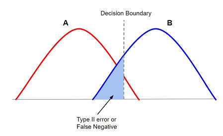

The power of a hypothesis test is the probability of correctly rejecting the null hypothesis or the probability that the test will correctly support the alternative hypothesis (detecting an effect when there actually is one)1. Then,
High power: large chance of a test detecting a true effect.
Low power: test only has a small chance of detecting a true effect or that the results are likely to be distorted by random and systematic error.
\[
Power = 1-\beta
\]
Where, \(\beta\) = probability of committing a Type II Error (the probability that we would accept the null hypothesis even if the alternative hypothesis is actually true). Then, by decreasing \(\beta\) power increases [@(pdf)ef].

Visual view of beta
Power is mainly influenced by sample size, effect size, and significance level.
37.2 Power Analysis: OLS Regression
For this power analysis we will use the univariate (simple) OLS regression example of our last presentation examining the relationship between a vehicle’s weight (WT) and its miles per gallon or fuel efficiency (MPG).
When performed, the paired correlation provided us with a pearson’s correlation coefficient of r(30) = -.868, p<0.05, (n = 32). When we ran this regression we got an (\(R^2\) = .75) Therefore for the r2 value (effect size) for a power analysis we will begin with an r2 value of .75 and an n = 32 to account for the observations already collected. However, the power analysis should occur before collecting samples so that we can have an appropriate number of observations required for our hypothesized effect size. In our example, we are also assuming that the variables are normally distributed. Based on our correlation analysis, weight likely needs a cubic transformation, This would mean that our model would have three coefficients of interest.
Formula for a univariate Ordinary Least Squares (OLS) Regression:
\[
\hat{y}_i = \beta_0 + \beta_1x_i
\]
The OLS regression model line for our example is:
\[
\widehat{MPG_i} = \beta_0 +\beta_1*WT_i
\]
Using an alpha value of \(\alpha\) = .05 (The probability of a type I error/rejecting a correct \(H_0\), we will identify the number of observations or sample size (n) necessary to obtain statistical power (80% or \(\beta\) = 0.20) given various effect sizes. Statistical power in our example identifies the likelihood that a univariate OLS will detect an effect of a certain size if there is one.
A power analysis is made up of four main components. We will provide estimates for any three of these, as the following functions in r calculate the fourth component.
We found three functions in r to conduct power analyses for an OLS regression:
The pwrss.f.reg function in the pwrss package
The pwr.f2.test function in the pwr package
The wp.regression function in the WebPower package
37.2.1 The pwrss.f.reg function
We will start our power analysis using the The pwrss.f.reg function for one predictor in an OLS regression, with our given observations of n = 32 and \(R^2\) = .75. Given these values, we are expecting that one variable (WT) explains 75% of the variance in the outcome or Miles per gallon (R2=0.75 or r2 = 0.75 in the code)2.
RegOne_lm<-pwrss.f.reg( r2 =0.75, k =1, n =32, power =NULL, alpha =0.05)
Linear Regression (F test)
R-squared Deviation from 0 (zero)
H0: r2 = 0
HA: r2 > 0
------------------------------
Statistical power = 1
n = 32
------------------------------
Numerator degrees of freedom = 1
Denominator degrees of freedom = 30
Non-centrality parameter = 96
Type I error rate = 0.05
Type II error rate = 0
RegOne_lm$power
[1] 1
Given the information provided, we get 100% power. Our effect size of r2 = 0.75 is considered a large effect provided the following guidelines by Cohen (1988)3
\(f^2\) = 0.02 indicates a small effect;
\(f^2\) = 0.15 indicates a medium effect;
\(f^2\) = 0.35 indicates a large effect.
We will use these guidelines to continue our exploration. We will concentrate on a fixed medium effect size. Where, the paired correlation is approximately r = .40 for a medium correlation and for an \(f^2\) or effect size of 0.15. using this fixed effect, we will look at various sample sizes to obtain power of 80% or greater given a medium effect size. In our sequence of possible sample sizes, the minimum n = 1 as n > p(p+1)/2 = 1(2)/2 = 1
OLSReg_df<-tibble(n =seq.int(from =2, to =99+2))OLSReg_df$power<-map_dbl( .x =OLSReg_df$n, .f =~{out_ls<-pwrss.f.reg(# "Effect size" of a linear model r2 =0.15,# number of predictors k =1,# sample size n =.x, power =NULL, alpha =0.05,# Stop printing messages verbose =FALSE)out_ls$power})
Warning in qf(alpha, df1 = u, df2 = v, lower.tail = FALSE): NaNs produced
The following is the power curve for a fixed effect of f2 = 0.15
ggplot(data =OLSReg_df)+theme_bw()+aes(x =n, y =power)+labs( title ="Omnibus (F-test) Power for Linear Model", subtitle ="Fixed Effect Size R2 = 0.15, 1 Predictor")+scale_y_continuous(limits =c(0, 1))+geom_point()+geom_abline(slope =0, intercept =0.8, colour ="gold")
Warning: Removed 1 row containing missing values or values outside the scale range
(`geom_point()`).
Given the graph, we notice that we need an approximate sample size or n of close to 50 to detect a medium effect size in an OLS Regression.
The following is a power analysis for a univariate OLS regression given a fixed sample size. We will create a sequence of effect sizes that capture Cohen’s guidelines as well as the effect size of 0.75 of our sample regression. Our fixed n will be n = 32 as the sample.
OLSRegN_df<-tibble(R2 =seq(0, 0.75, length.out =100))OLSRegN_df$power<-map_dbl( .x =OLSRegN_df$R2, .f =~{out2_ls<-pwrss.f.reg(# "Effect size" of a linear model r2 =.x,# number of predictors k =1,# sample size n =32, power =NULL, alpha =0.05,# Stop printing messages verbose =FALSE)out2_ls$power})
The following is the power curve for a fixed sample size of n = 32
ggplot(data =OLSRegN_df)+theme_bw()+aes(x =R2, y =power)+labs( title ="Omnibus (F-test) Power for Linear Model", subtitle ="Fixed Sample Size = 32, 1 Predictor")+scale_y_continuous(limits =c(0, 1))+geom_point()+geom_abline(slope =0, intercept =0.8, colour ="red")
Given the graph, we notice that given n = 32, a power of 80% and higher is achieved when the effect size is at least approximately r2 = 0.20.
37.2.2 The pwr.f2.test function
Power analysis using the pwr.f2.test: where, u = 1, The F numerator degrees of freedom (u=1) or the number of coefficients(independent variables) in the model
and we will use Cohen’s criteria for effect sizes and first provide analyses for a medium effect size of 0.15 [3]45
# Using Cohen 1988 criteria, where, #f2 = 0.02 small effect;#f2 = 0.15 medium effect;#f2 = 0.35 indicates a large effect### Fixed Effect size f2 = 0.15#### n = 50pwr.f2.test( u =1, v =50-1-1, f2 =.15, sig.level =0.05, power =NULL)
Multiple regression power calculation
u = 1
v = 48
f2 = 0.15
sig.level = 0.05
power = 0.7653128
# n = 25pwr.f2.test( u =1, v =25-1-1, f2 =0.15, sig.level =0.05, power =NULL)
Multiple regression power calculation
u = 1
v = 23
f2 = 0.15
sig.level = 0.05
power = 0.4584646
# n = 12pwr.f2.test( u =1, v =12-1-1, f2 =0.15, sig.level =0.05, power =NULL)
Multiple regression power calculation
u = 1
v = 10
f2 = 0.15
sig.level = 0.05
power = 0.2289402
Now, we will explore a fixed n = 32
# ES = .02, r = .14pwr.f2.test( u =1, v =32-1-1, f2 =.02, sig.level =0.05, power =NULL)
Multiple regression power calculation
u = 1
v = 30
f2 = 0.02
sig.level = 0.05
power = 0.1210661
# ES = 0.15, r = .39pwr.f2.test( u =1, v =32-1-1, f2 =0.15, sig.level =0.05, power =NULL)
Multiple regression power calculation
u = 1
v = 30
f2 = 0.15
sig.level = 0.05
power = 0.5637733
# ES = .35, r = .59pwr.f2.test( u =1, v =32-1-1, f2 =0.35, sig.level =0.05, power =NULL)
Multiple regression power calculation
u = 1
v = 30
f2 = 0.35
sig.level = 0.05
power = 0.8993357
We will now look at the 3 types of effect sizes given various sample sizes
get_power<-function(df){power_result<-pwr.f2.test( u =1, v =df$sample_sizes-1-1, f2 =df$effect_sizes,)df$power=power_result$powerreturn(df)}# run get_power for each combination of effect size # and sample sizepower_curves<-input_df%>%do(get_power(.))%>%mutate(effect_sizes =as.factor(effect_sizes))ggplot(power_curves, aes(x=sample_sizes, y=power, color=effect_sizes))+geom_line()+geom_hline(yintercept =0.8, linetype='dotdash', color ="purple")
Based on the graph, if we have an effect size of 0.15, we need approximately 50 or more observations (recall n = v + 1 + 1)
37.2.3 The wp.regression function
Lastly, we use the wp.regression function to examine the appropriate sample size given an effect size of 0.15 to achieve a power of 80% or higher [6]7
# Using webpower #p1 = 1### Fixed ES = 0.15 ###res<-wp.regression(n =seq(20,100,20), p1 =1, f2 =0.15, alpha =0.05, power =NULL)res
plot(res, main ="Fixed Effect Size = 0.15")+abline(a =.80, b =0, col ='steelblue', lwd =3, lty =2)
integer(0)
The results are similar to the previous functions. However, in this function, given an effect size of 0.15, we need an n of close to 60 to achieve 80% power.
# Using webpower #p1 = 1### Fixed n = 50 ###res<-wp.regression(n =50, p1 =1, f2 =seq(0.00, 0.35, 0.05), alpha =0.05, power =NULL)res


-1.png)